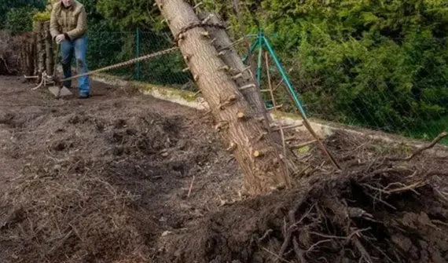

Lagrene Paysagiste 59 : Votre expert en abattage d’arbres et haies à Lille 59000
Abattage arbres et haies à Lille
Vous cherchez une expertise professionnelle pour l’entretien de votre espace vert à Lille ? Lagrene Paysagiste 59 se présente comme l’équipe idéale pour l’abattage d’arbres et la taille de haies. Leur savoir-faire minutieux garantit un travail précis et sécurisé. Lagrene comprend l’importance vitale de préserver l’esthétique de votre jardin tout en assurant la sécurité de l’environnement. Chaque membre de leur équipe est formé pour réaliser des opérations d’abattage et de taille avec attention et expertise, veillant à ce que chaque arbre abattu et chaque haie taillée contribuent à transformer votre espace extérieur en un lieu magnifique et accueillant. Leur engagement envers l’excellence esthétique et la sécurité environnementale garantit un travail impeccable, façonnant ainsi votre jardin en un véritable havre de paix, à la fois esthétique et sécurisé.
Notre savoir-faire
Lagrene Paysagiste, expert pour un travail soigné
Lagrene Paysagiste 59 se démarque par son expertise inégalée dans l’abattage d’arbres à Lille. Leur équipe expérimentée aborde chaque opération avec minutie et professionnalisme, garantissant un travail méticuleux et sécurisé. Ils accordent une attention particulière aux spécificités de chaque arbre, utilisant des techniques adaptées pour un abattage sans danger, préservant ainsi l’intégrité de votre jardin tout en assurant la sécurité de votre propriété. Chaque membre de l’équipe Lagrene est formé pour exécuter les opérations d’abattage avec précision et soin, en suivant des protocoles stricts pour éviter tout risque pour votre environnement extérieur. Lagrene s’engage à offrir un service fiable et sûr, garantissant ainsi un résultat optimal tout en préservant l’esthétique et la sécurité de votre espace extérieur.

Taille de haies expertisée à Lille
La taille de haies exige une précision hors pair pour obtenir un aspect net et esthétique. Lagrene Paysagiste 59, fort de son expérience à Lille, propose un service expert de taille de haies. Leur approche professionnelle et méticuleuse assure une taille précise, préservant la santé des plantes tout en conférant à votre espace extérieur une allure soignée et harmonieuse. Chaque membre de l’équipe Lagrene est formé pour effectuer la taille des haies avec le plus grand soin, en utilisant des techniques spécifiques adaptées à chaque type de plante. Leur engagement envers la préservation de la santé végétale et l’harmonie esthétique se reflète dans chaque coupe, offrant ainsi à votre espace extérieur une apparence soignée et un attrait visuel impeccable, à la fois ordonné et équilibré.
Abattage d’arbres et haies au top
Lagrene Paysagiste 59 s’engage résolument à fournir des services d’abattage d’arbres et de haies de qualité supérieure à Lille. Leur équipe compétente et dévouée s’applique à un travail méticuleux et sécurisé, respectant les normes les plus élevées de l’industrie. Que ce soit pour l’abattage d’arbres encombrants ou la taille précise de haies, Lagrene excelle dans chaque aspect de l’entretien de votre espace extérieur. Chaque membre de leur équipe est formé pour exécuter les tâches avec précision et souci du détail, garantissant ainsi un travail effectué dans le respect de l’environnement et de la sécurité. Lagrene ne ménage aucun effort pour offrir un service complet et impeccable, transformant ainsi votre jardin en un espace soigné et parfaitement entretenu, prêt à accueillir de nouvelles possibilités d’aménagement.

Abattage d’arbres soigné à Lille : Lagrene, la confiance assurée
Lagrene est l’adresse de confiance pour un abattage d’arbres professionnel et méticuleux à Lille. Leur équipe expérimentée emploie des techniques sûres et efficaces pour chaque opération. Qu’il s’agisse de traiter des arbres malades, d’éliminer des spécimens encombrants ou simplement de remodeler votre espace vert, Lagrene assure un service sans souci et un résultat exceptionnel. Chaque abattage est exécuté avec une précision chirurgicale et dans le respect des normes de sécurité les plus strictes. Leur engagement envers l’excellence se traduit par un service professionnel, où chaque arbre est retiré avec précaution et expertise, transformant ainsi votre paysage extérieur en un espace soigné et sûr, prêt à être réimaginé selon vos souhaits. Nous restons prêts à vous offrir le devis à tout moment.
Une expertise tout à fait inégalée
Lagrene Paysagiste 59 se démarque par son expertise inégalée dans l’art de la taille de haies à Lille. Leur approche méticuleuse et leur attention méticuleuse aux détails garantissent des haies parfaitement entretenues, offrant une esthétique raffinée à votre jardin. Chaque intervention de Lagrene est bien plus qu’une simple taille de haie, c’est une véritable œuvre d’art où chaque coupe est exécutée avec précision et délicatesse. Chaque buisson, chaque feuille est soigneusement façonné pour créer un panorama extérieur d’une beauté naturelle remarquable. Avec Lagrene à la barre, vos haies bénéficient d’un soin attentif, créant ainsi un paysage extérieur qui évoque l’harmonie, l’élégance et un sens aigu du raffinement à chaque regard
Demander un devis gratuit